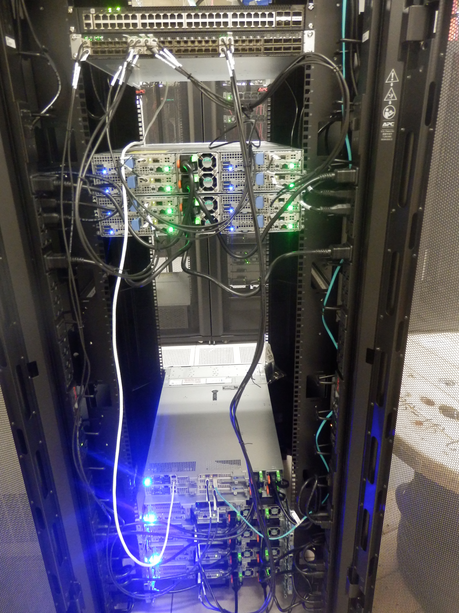
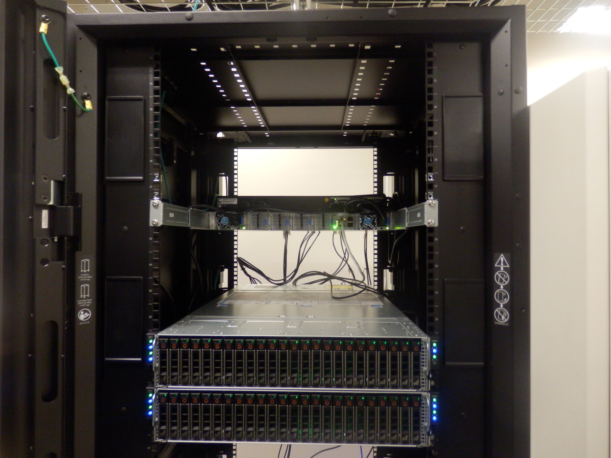
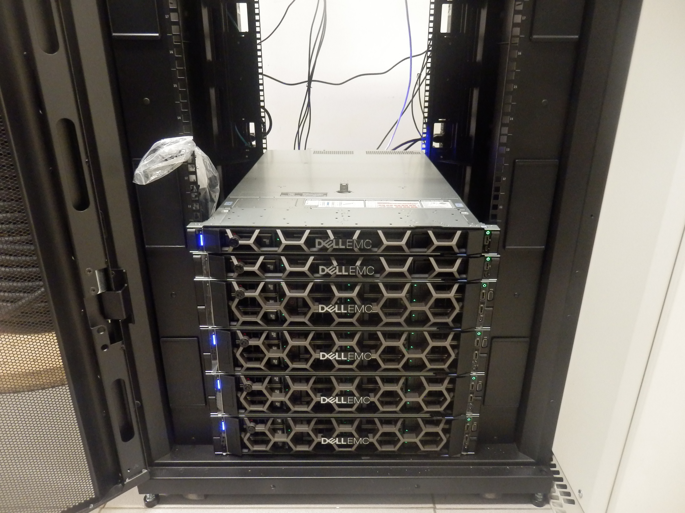
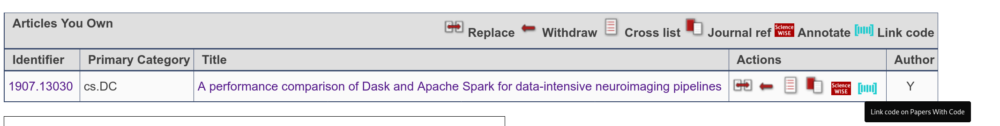
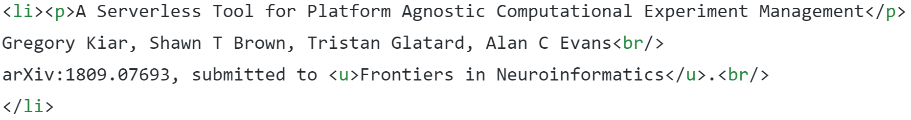

Welcome to the lab! Here are some information, resources and tips to help you get started.
Get familiar with the following technologies asap:
Coding
Code is first-class citizen in the lab. It is the primary output of your research.
Any code in the lab is by default:
- In a Git repository.
- On GitHub.
- Hosted under the /bin organization.
- Licensed under GPL-3.0 (Free Software is good) or MIT (for a library).
- Written in Python.
To contribute to a code base (including your own project):
- Fork the repository on GitHub.
- Push commits to your fork.
- Make Pull Requests (PRs) to the base repository.
Before releasing a repository, make it usable:
- Add a demo (data + expected answer) to demonstrate the main functionality.
- Write a README.md file.
- Make a 1-line installation procedure using pip, gem, cmake or autotools.
- Document all the user-facing functions.
- Write tests using pytest.
- Configure continuous integration in the repository.
- Push a container image to DockerHub (only if relevant).
- Add badges to README.md (if relevant).
Once a release is ready:
- Tag it in the Git repository.
- Write release notes on GitHub.
- Create a develop branch. After the first release, the master branch will always contain the latest release; develop will contain non-released commits.
See examples in /bin.
Lab cluster
The lab owns a compute cluster, primarily aimed for reproducible
performance measurements in a controlled environment. The cluster is currently administrated
by Valérie and Tristan.
How to get access
Where to put data
- Your home directory, located under
/home, is
mounted on the compute nodes. It is of limited capacity and
should primarily be used to store config files, programs or
small data files.
- Compute nodes have 6 local disks of size 450GB, mounted as
/disk[0-5]. You can use them as you wish during your
SLURM allocation, but data may be cleaned up once your
allocation expires.
- A shared (Lustre) file system of higher capacity is being
configured.
- No back up is or will be configured. Disk failure resulting
in data loss may happen at any time. Make sure your important files are saved elsewhere.
DONTs
DONT ssh directly from the login node to the
compute nodes. Always use SLURM to make a reservation.DONT make unreasonable reservations before
discussing them on #cluster. An unreasonable
reservation is longer than a week or requests more than 1
entire node.DONT run compute-intensive jobs on the login
node.
Gallery
Overview (back)
From top to bottom:
- 2 network switches: this will allow us
to dedicate a network for an experiment while still allowing other users to use the cluster.
- 8 compute nodes: each with 6 SSDs, 32 cores and 256GB of RAM.
- 1 control node: login node with external network access.
- 1 control node: Lustre metadata server.
- 4 storage nodes: each with 12 HDDs and 2 SSDs.

Compute nodes (front):

Control and storage nodes (front):

Compute Canada
Having a Compute Canada (CCDB) account gives you access to
storage and computing resources on Compute Canada, in
particular to our compute and storage allocation on beluga.computecanada.ca. Compute Canada
is our primary platform for data processing.
To create a Compute Canada account:
- Register here
- Review and accept the Compute Canada Acceptable Use Policy (AUP)
- Enter your user information. Use Tristan's CCRI: bwf-484-02
- Submit your application
- After 2-3 days, confirm the Group Member's Application
- You can find more details here
- Once your Compute Canada account is active (see procedure
above), you can request for a cloud account with this form.
You may be contacted via email to ask for your PI. In that case,
reply to the email, indicate that Tristan (CCRI: bwf-484-02) is your
PI and asking for access to his allocation. Keep Tristan in cc of
this email.
How to submit a PySpark job?
- Documentation is available here
Printing
For all work-related printing needs, there's a printer available in EV 8.401
It is possible to connect through this printer through USB (in the lab) or by
accessing the UI using the following IP or hostname through a web browser connected to the
internet using a wired Concordia connection:
Hostname: pr-tidal.encs.concordia.ca
IP address: 132.205.98.160
Writing
- Adopt a writing schedule as soon as possible and comply to it. Suggestion to start: 4 hours per week.
- Suggestions on what to write:
- Write your own summary any time you read a paper.
- Write a few paragraphs on your current work or ideas.
- Outline your next paper or thesis.
- Create detailed outlines of important documents (papers, theses) as early as possible.
- Tools
- Use Latex by default. Use Google Docs when heavy collaboration is expected (e.g., brainstorming document). Here is a Latex template for a Concordia Master's thesis.
- Create a Git repository for papers and theses, containing:
- The Latex/Bibtex source.
- Any script (matplotlib strongly recommended) and data required to reproduce Figures. You might loose a few hours cleaning up your scripts but it will save you days when you need to update your manuscript.
- See example here.
- Push the Git repository on GitHub and encourage collaborators to fork/PRs (see Code section).
- General recommendations
- Create vectorial figures using a vectorial format (pdf, svg, ps) rather than a bitmap one (png, jpeg).
- Create a single script to generate all the figures in the paper. This script shouldn't have any parameter.
In this situation, it is ok to hard-code file paths relative to the root of the Git repo. Don't use absolute paths, they will
work only on your computer.
- Don't include figures in the Git repo, as it would rapidly make it bulky. Instead, write clear instructions on how to generate them.
- Don't include (too much) binary data in the Git
repo. If your scripts require binary data, put it
on Zenodo and use
Zenodo's permanent link in your scripts. Don't use
your personal web/ftp server, Dropbox or Google Drive.
- Useful books and references about writing:
Pre-prints
All papers under review
must be submitted as pre-prints to arXiv or bioRxiv, unless
otherwise mentioned. A pre-print is a version of a paper that
is posted to a repository and can be accessible to readers
before its publication in a peer-reviewed journal or
conference. There are well-known pre-print databases such as
arXiv.org (for Computer Science, Engineering and many
other scientific fields), and bioRxiv (for Biology
researches). Pre-prints are important because they are:
- Free for both readers and authors.
- Accessible to everyone while it is on the process
of reviewing by a journal which mostly takes several months.
- Immediately citable.
- Safely archived and gets a date stamped.
To get familiar with the procedure of submitting a
paper to arXiv you might find this YouTube video useful.
Please note that submitting paper as a PDFLaTeX wrapper,
using pdfpages, is not acceptable and it will end up to
Incomplete
status after a long period of waiting for
getting the permanent identifier code. Instead,
create an archive containing your TeX source file with all the necessary
files for generating the PDF format of your paper, and upload
this archive to arXiv.
When you submit a paper, make sure to link the GitHub repository
for the project if relevant.

After receiving the permanent
arXiv identifier (e.g.: 1809.10139) by email, please update
the lab website (Pre-prints/submitted papers section under
the publications tab) with the arXiv number.

Experimentation
Most of your papers will be based on experiments conducted with your developed software. Be meticulous and patient, it takes time to get a good experimental setup. Make yours this quote by David Donoho et al (2009):
the scientific method's central motivation is the ubiquity of error -
the awareness that mistakes and self-delusion can creep in absolutely anywhere
and that the scientist' effort is primarily expended in recognizing and rooting out error.
In other words, think of all possible causes that might corrupt your results: background tasks running on computers, software bugs, data corruption, etc
Presentation tips
General tips to prepare slides for a presentation:
- Prepare a slide-by-slide outline of the presentation before doing the slides.
- Prepare 1 slide per minute, including title and transition slides.
- Use citations whenever relevant. In format [author et al, year], not [1]. Don't show a slide containing a list of references, this is useless.
- Add figures wherever you can, they are usually way clearer than text.
- Make sure that all figures have a caption.
- Bullet points shouldn't span multiple lines.
- Don't use more than 2 levels of bullet points.
- Don't use more than 3 level-1 bullet points per slide.
- Don't use more than 3 level-2 bullet points per level-1 bullet point.
- Start every bullet point with a capital.
- Make sure your slides have numbers.
- On your first slide, add date, affiliation, logo, venue, etc
- If you are presenting a paper (reading club) add title, authors, year, and publication venue of the paper on the first slide.
General tips to prepare a poster for a presentation:
- Free printing service for all faculty, staff, and students in the Gina Cody School of Engineering and Computer Science.
- Verify the conference instructions for poster size. If not
mentioned, the most common poster size is 48"x36" (lxh).
- Keep it simple and easy to read; i.e. stick to bullet point.
- Include authors under the title
Core values
The lab is committed to the following values:
- High quality is preferable to high quantity.
- Technical quality is a requirement to scientific quality.
- Openness leads to better content.
The target lab culture is to promote frequent informal interactions, personal freedom, academic integrity, gender equality, cultural diversity and ... having fun doing research!
Communication and interactions
- Never hesitate to ask a question to anyone.
- Register to Slack (in the future me might use Mattermost instead).
- Share information with others in the lab. It includes ideas, code snippets, technical tips, etc Your co-workers are not your competitors, you are on the same side.
- Communicate regularly with Tristan. On Slack, by email or by requesting a meeting whenever required. Don't let any issue block your work or bother you for too long without talking about it.
- Attend hackathons, in particular those organized by BrainHack in Montreal. Use hackathons to demonstrate your project, collect feedback on it, and stay up-to-date on technology.
Code of conduct
This section is largely copied from Whitaker's lab Code of Conduct.
- Harassment by and/or of members of our community in any form will not be tolerated. Harassment includes offensive verbal comments related to gender, sexual orientation, disability, physical appearance, body size, race, religion, sexual images in public spaces, deliberate intimidation, stalking, following, harassing photography or recording, sustained disruption of discussions, inappropriate physical contact, and unwelcome sexual attention.
- Work hours: The hours that members of the lab choose to work is up to them. We are each welcome to send work-related emails, pull requests or Slack messages over the weekend or late at night, but no lab members are required to reply to them outside of their typical work hours. Lab members are welcome to work flexibly for any reason. Ideally, all lab members will have at least a few hours each week to overlap with Tristan in order to stay in touch, but it is the policy of the lab that every member is already self-motivated and doesn't need to work a traditional 9 to 5 day in order to meet their goals.
- If you experience any challenges of any kind related those topics, please contact Tristan. All communication will be treated as confidential.
Academic integrity
- Sharing data, code and text through Git repositories hosted on GitHub is a good way to protect us against scientific misconduct.
- Reusing text or code from others' work is fine (even encouraged) as long as the source is properly credited. Omitting to cite the source is plagiarism.
- Data fabrication or falsification is evil. Don't even think about it. If your data looks strange, don't delete or omit it. Repeat the experiment and try to understand what is going on, you will learn more. If your graph is missing a point or two and the submission deadline is coming too soon, let the graph be incomplete. You will feel better and it will improve the paper. There is no such thing as a good or a bad result, there are just results.